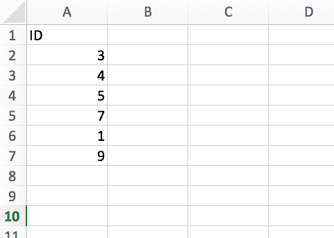

<mat-dialog-content >
    
</mat-dialog-content> 
<mat-dialog-actions class="bg-slate-50">
    <button mat-dialog-close class="uppercase font-semibold text-black">cerrar</button>
</mat-dialog-actions> 

